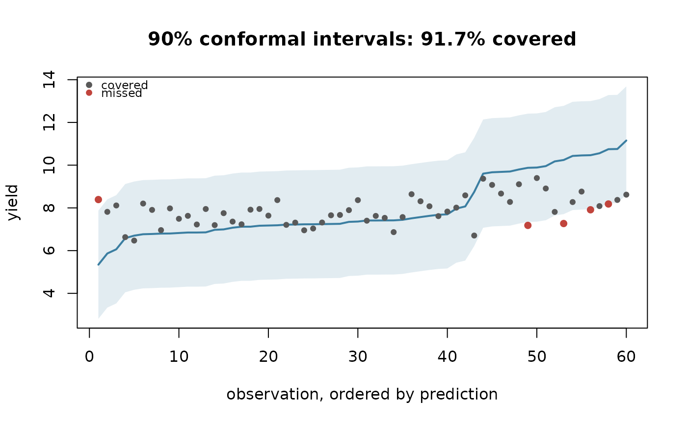

Observations are sorted by prediction and drawn with their conformal
interval, with the ones the interval missed picked out. A calibrated
interval should miss about 1 - level of them, scattered rather than
concentrated at one end.
Arguments
- model
A model fitted by
train_model().- level
Coverage level.
- ...
Passed to
plot.
Examples
p <- agri_project(demo_agri_data(n_units = 20, n_seasons = 3))
p <- build_features(phenology_windows(add_climate(p)), stats = "sum")
m <- train_model(p, "yield", algorithm = "lm", k = 3)
plot_uncertainty(m)
